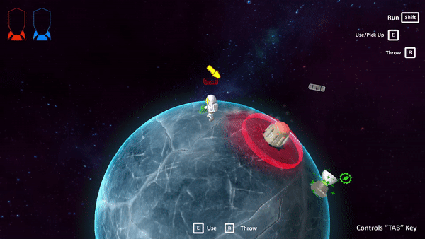
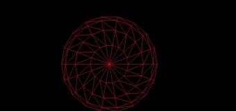
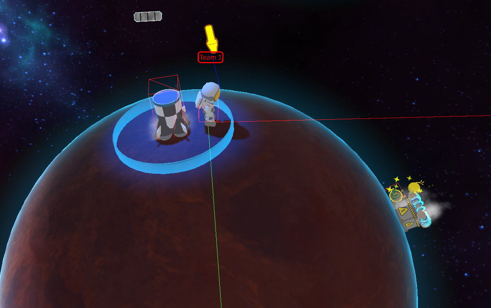

Stranded Engineers
Role: Programmer Engine: Own Engine using C++, DirectX 11
Time: Late 2022 - Early 2023 Group: 7 members
This game was developed as an assignment for the course Large game development project with agile methods at Blekinge Institute of Technology. This course took place over a period of 4 months, where 7 people got together in order to create a game. This group consisted of 5 programmers and 2 technical artists. We used the agile method scrum, and split the game features into multiple tasks. Every 2 weeks teachers checked up on us to see if things had gone according to plan.MY CONTRIBUTIONS
Click on the boxes to get more info
Wrapper of Physics library
The first large task I took upon myself was to implement a wrapper in order to simply the creation and use of physics hitboxes.
Since the physics was really important to us, we decided to use an already existing library in order to have more time for other
features. But to use the library for our game, a wrapper had to be created. We chose to use the React Physics 3D library.In order to tackle this problem I first had to understand the libray. Luckily, they had documentation which was informative and gave enough information. My vision was to have our game objects inside the game have a physcis component, which handled all the physics. The group also agreed with this idea, since this would mean that all that was needed was for the user to specify the size and shape of the hitbox and then everything was handled automatically.  Physics applied to item
Debugging Tools
In combination with the physics wrapper, I wanted a way to visualise these hitboxes to more easily debug and decide on appropiate sizes.
This was a daunting task, since I did not know where to begin. After looking through the documentation of React Physics 3D, I found that
they had a debugger. I could not get this debugger to render hitboxes, and therefore decided to create my own. This debugger used information
given by react's debugger, which was information about all the triangles in the scene. To render the triangles, I created a pipeline and a way
to store the information about the triangles that worked for our pipeline. Every frame, the information regarding the triangles had to be updated.
This was to ensure the positions were correct every frame. When another collision box was added to the game, the debugger also had to update the
recreate the vertex buffer to fit the new triangles. After hours of debbuging I managed to get it to work, and it helped tromendously finding
correct sizes of hitboxes for the items.

Rendering of hitboxes using the debugging toolAnother debugging tool I created was one able to render vectors. This was done mainly since the player had some issues regarding movement. Since the movement used vectors, and since vectors are quite hard to understand when looking at the data, I made a debugger to visualse it instead. This debugger simply draws a line between to points in space, where the pipeline also takes in colour values in the place that normals usually occupy, allowing the coder so choose a different colour for every line.  Rendering of debug hitboxes using the debugging tool